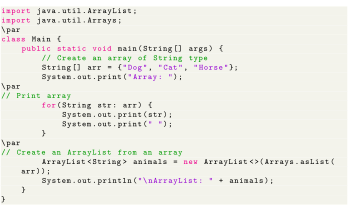

Next: Java ArrayList to String Up: Loop Through an ArrayList Previous: Java ArrayList To Array Contents
We can also convert arrays into array lists. For that, we can use the asList() method of the Arrays class. To use asList(), we must import the java.util.Arrays package first. For example,

Output
In the above program, we first created an array arr of the String type. We then converted the array into an array list using the asList() method.